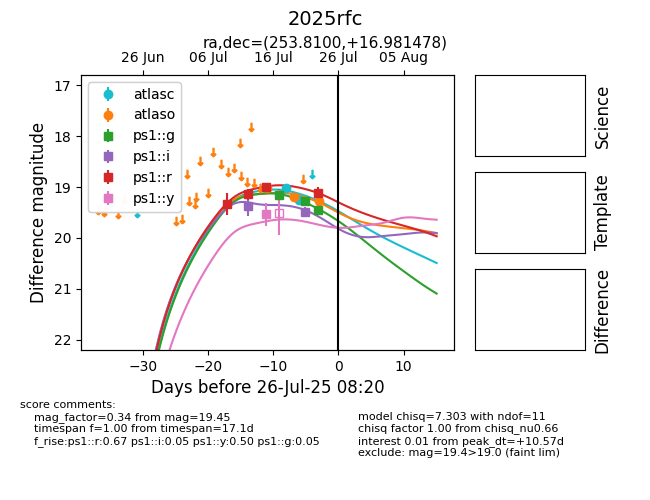

Target 2025rfc at 2025-08-05 23:02, see:
TNS: wis-tns.org/object/2025rfc
YSE: ziggy.ucolick.org/yse/transient_detail/2025rfc
alt names
2025rfc (yse,tns)
coordinates:
equatorial (ra, dec) = (253.8100,+16.98148)
galactic (l, b) = (36.2297,+33.12593)
photometry
last atlasc=19.24, atlaso=19.45, ps1::g=20.12, ps1::i=20.02, ps1::r=19.30, ps1::y=19.54
2 atlasc, 4 atlaso, 7 ps1::g, 4 ps1::i, 5 ps1::r, 1 ps1::y detections
